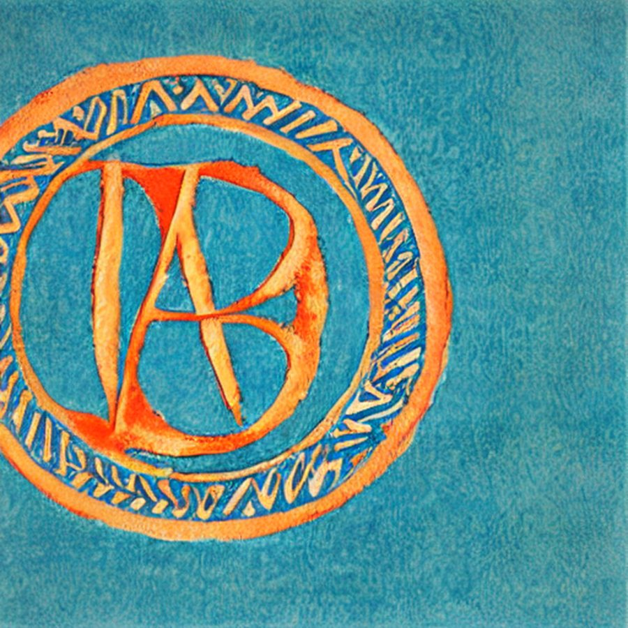
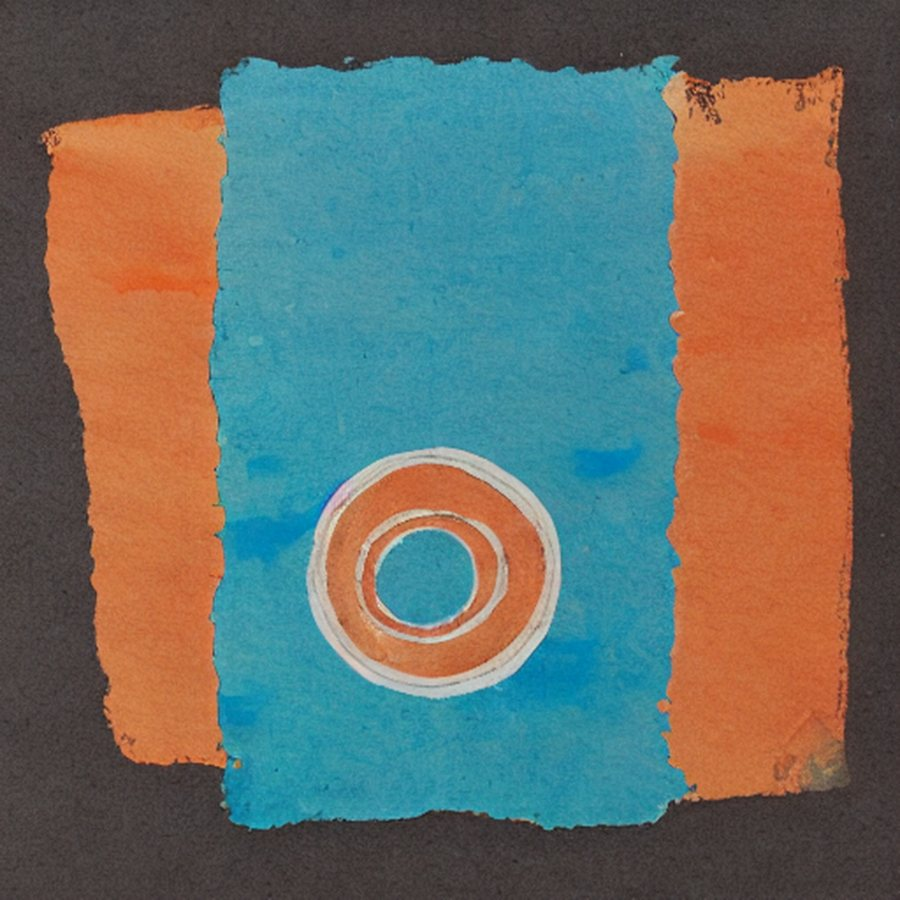
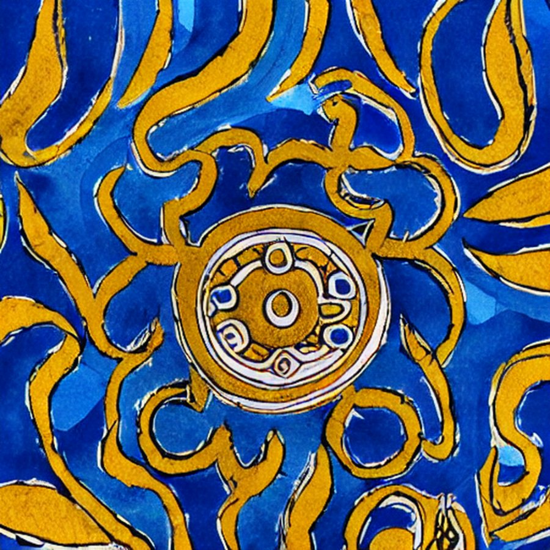
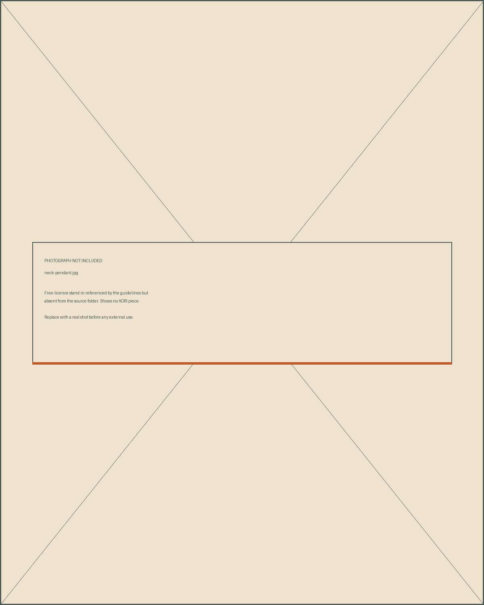

Twelve pieces, then the run closes
AORI is a one-bench silver workshop in Heraklion. Every piece is forged, filed and finished by hand in runs of twelve, and every run is named for a place on the island — the ridge, the sea below the village, the olive terraces, what is left of the Minoan goldwork. When a run is gone it is not remade. The next sheet of silver is a little different, and so is the next run.
Nothing is cast. Nothing is plated. The hammer marks are left where they fall and the surface is left matte, so a piece darkens with wear and comes back with a cloth.
AORI is a handmade silver jewellery workshop in Heraklion, Crete. Pieces are forged by hand in runs of twelve, each run named for a place on the island. Silver 925, matte, never plated, never repeated.


The mark

One wordmark, three colourways. It is painted lettering, so it is never re-set in type above 28px and never re-drawn. Below 28px, where the painted edge muddies, the name is set in GFS Didot uppercase tracked .22em — that is the only permitted substitute.





Approved images
Two kinds of picture, and they are not interchangeable. Paintings carry the places and open a page; they are mounted with a 5 mm unpainted margin on toned stock. Photographs show a piece; they go full bleed with no border, because a border on a photograph reads as a frame. A painting may never stand in for a product shot, and a photograph may never open a page or appear on packaging.



Product facts
Prices include VAT
The clerical register: stone ground, form-green ink, hairline rules, Commissioner throughout. Nothing here is styled to charm, because a stockist reading a spec does not want to be charmed. This is the one sheet in the kit that carries no painting.
One bench, and a sheet of silver cut for twelve
The workshop is one room in Heraklion with one bench in it. Silver arrives as sheet and wire and is cut, forged, filed and finished by hand. Nothing is cast, so nothing is identical; nothing is plated, so nothing wears through to a different metal underneath.
A sheet is cut for twelve pieces because that is what a sheet gives. When the twelve are gone the run is closed and the page stays up with the count on it, because a closed run is part of the record rather than something to hide.
The runs are named for places rather than for seasons — the ridge with snow on it until May, the sea below the village that goes flat at six, the olive terraces, and what is left of the Minoan goldwork in the museum up the road.